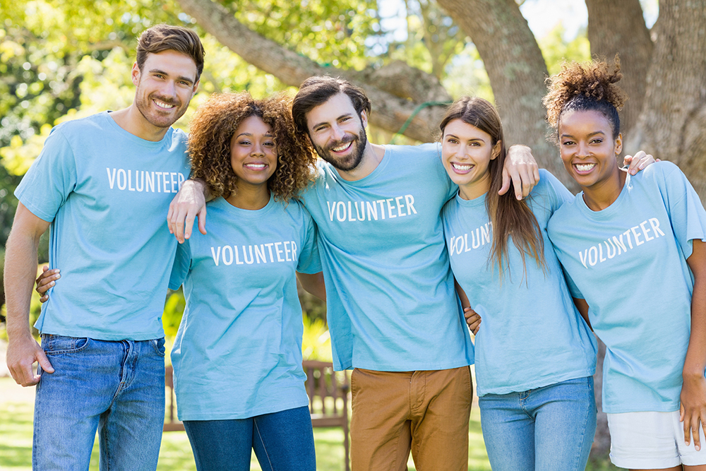

Hello tht's main page of my project "Volun near app". That's application made for communication between organizations and volunteer. Volun Near, developed by NexenTech Solutions in 2024, is a cutting-edge application that revolutionizes how volunteers and organizations connect. The app boasts a sleek design, intuitive navigation, and advanced matching algorithms that enhance user experience. Built with a robust backend using Spring Boot and a responsive frontend with React, Volun Near ensures reliable performance across all devices. Key features include real-time notifications, secure messaging, and personalized dashboards for managing activities. With a commitment to fostering collaboration, Volun Near stands out as a trusted platform in the volunteer and non-profit sector.
